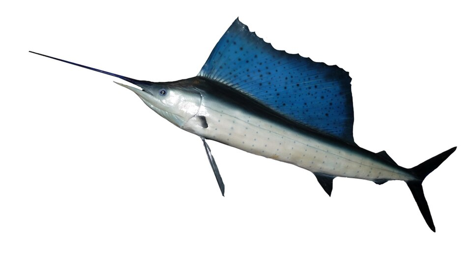
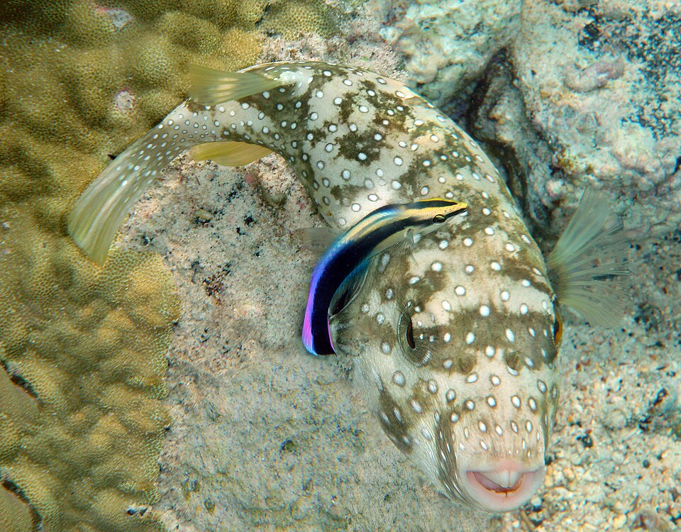
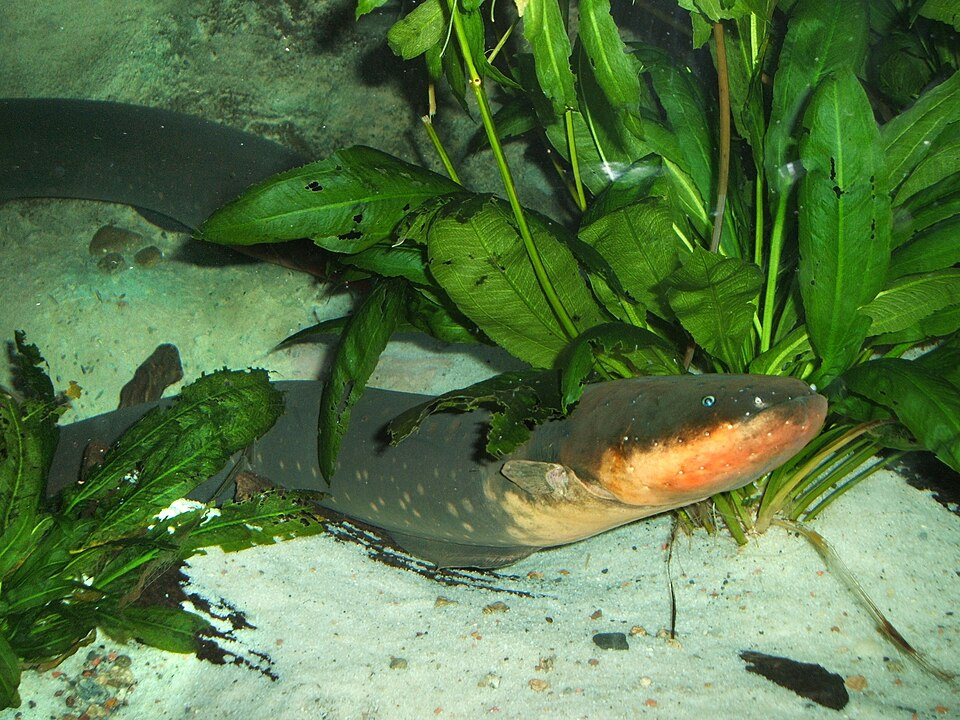
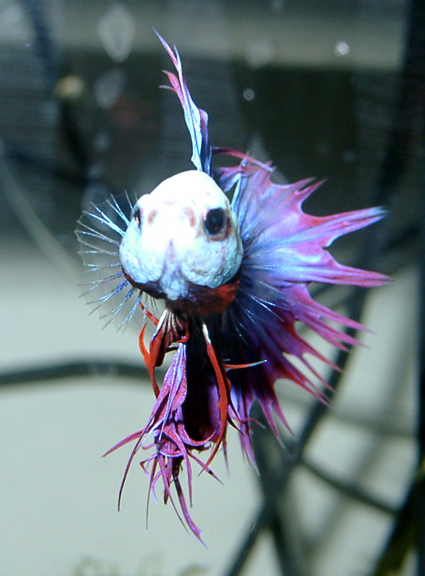
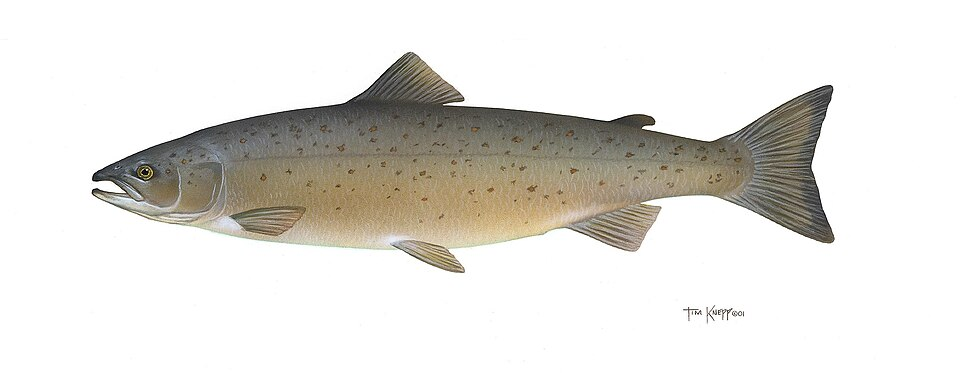
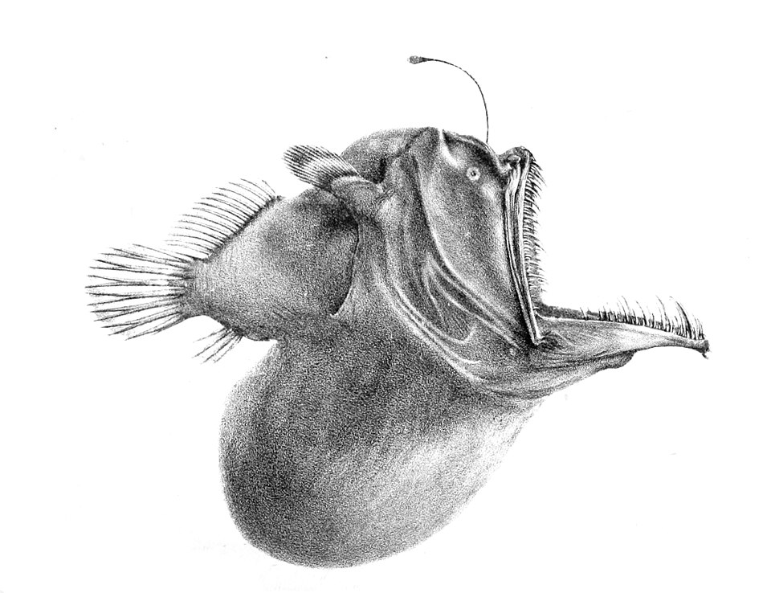
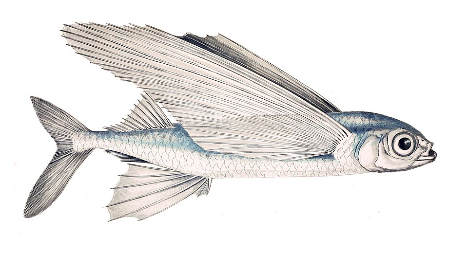
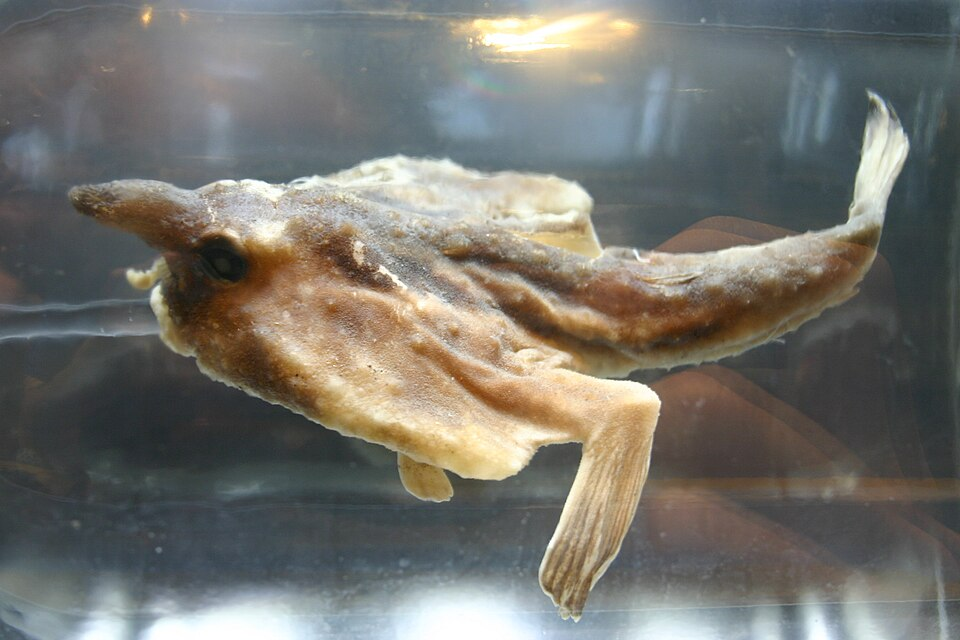
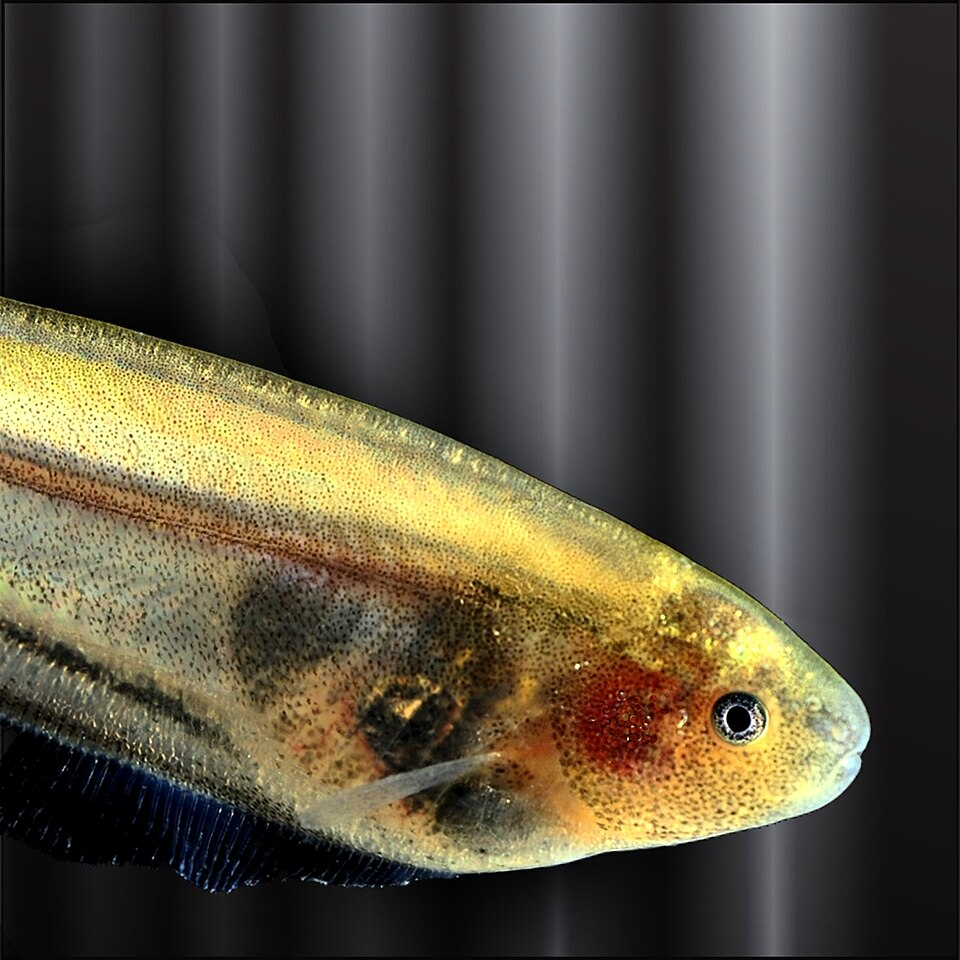
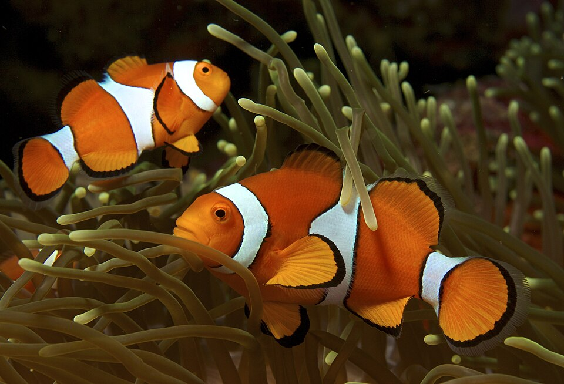

🧜♀️ ¡Bienvenido, buceador! Pasa el ratón por encima de las burbujas para verlas explotar de información. Estos son los 10 temas más locos de las profundidades.
⚡🏆
1. El Rey de la Velocidad
El Pez Vela es el pez más rápido del océano, alcanzando los 110 km/h. ¡Es más rápido que un coche en una autopista! Su aleta dorsal como una vela le ayuda a cortar el agua y girar rapidísimo.
💡 ¡Puede cambiar de color de azul a plateado cuando se excita o asusta!

🎈🐡
2. El Globo Espinoso
El Pez Globo es un maestro del engaño. Cuando se siente amenazado, ¡se traga agua y se infla hasta triplicar su tamaño! Además, su cuerpo esconde una sustancia llamada tetrodotoxina, un veneno mortal hasta 1,200 veces más fuerte que el cianuro.
💡 ¡En Japón solo chefs con licencia pueden cocinarlo, y si se equivocan, se convierten en su última cena!

🔋⚡
3. La Anguila Eléctrica
No es una anguila de verdad, ¡es un pez cuchillo! Puede generar 600 voltios, suficiente para tumbar a un caballo. Usa su electricidad como un radar para "ver" en aguas turbias y para electrocutar a sus presas.
💡 ¡Su corazón y sus órganos vitales están en su cabeza para protegerse de su propia descarga!

🥊🐠
4. El Constructor de Nidos
El Pez Betta es un artista. El macho construye un "nido de burbujas" en la superficie del agua usando su propia saliva. ¡Es un arquitecto submarino! Y es tan territorial que los machos se pelean hasta la muerte (por eso se les llama "Pez Luchador de Siam").
💡 ¡Su color brillante no es solo belleza, es una amenaza para los rivales!

🏔️💦
5. El Viajero del Agua
El Salmón realiza una de las migraciones más épicas: nace en un río de montaña, nada miles de kilómetros hasta el mar, ¡y luego regresa al mismo río exacto donde nació para poner huevos! Para lograrlo, salta cascadas de hasta 3 metros de altura.
💡 ¡Usan el campo magnético de la Tierra y su olfato para no perderse ni un metro del camino!

🕯️🌑
6. El Pez con Linterna
En las profundidades más oscuras del océano, donde no llega la luz del sol, viven peces que fabrican su propia luz mediante bioluminiscencia. Usan bacterias o química corporal para brillar, atraer pareja y cazar.
💡 ¡El rape abisal usa una "caña de pescar" brillante para atraer a sus presas directo a su boca gigante!

✈️🌊
7. El Pez Volador
El Pez Volador tiene aletas pectorales enormes que usa como alas. Puede saltar del agua y planear hasta 200 metros, casi como un avión, para escapar de sus depredadores como el atún o los delfines.
💡 ¡Pueden llegar a volar a la altura de un segundo piso (unos 6 metros)!

🦇🐟
8. El Pez con "Patas"
El Pez Murciélago es un maestro de la evolución. Aunque vive en el agua, sus aletas se han convertido en "patas" que le permiten caminar sobre el fondo del océano, ¡como si fuera un pequeño lagarto marino!
💡 ¡Tiene un señuelo en la cabeza que huele y se mueve para engañar a sus presas!

🪟👻
9. El Pez de Cristal
El Pez Cuchillo de Cristal es casi invisible. Su cuerpo es totalmente transparente, por lo que se le pueden ver sus órganos internos, ¡hasta su corazón latiendo! Esta es su mejor defensa contra los depredadores.
💡 ¡Tiene un órgano eléctrico en su cola que le permite comunicarse y navegar sin ser visto!

🎭🐠
10. El Pez Cambia Sexos
Los Pez Payaso (como Nemo) son todos machos al nacer. Si la hembra dominante muere, ¡el macho más grande se transforma en hembra para seguir con la colonia! Es la versión submarina de "Los Juegos del Hambre".
💡 ¡También lo hacen otros peces como los lábridos o el pez loro!
